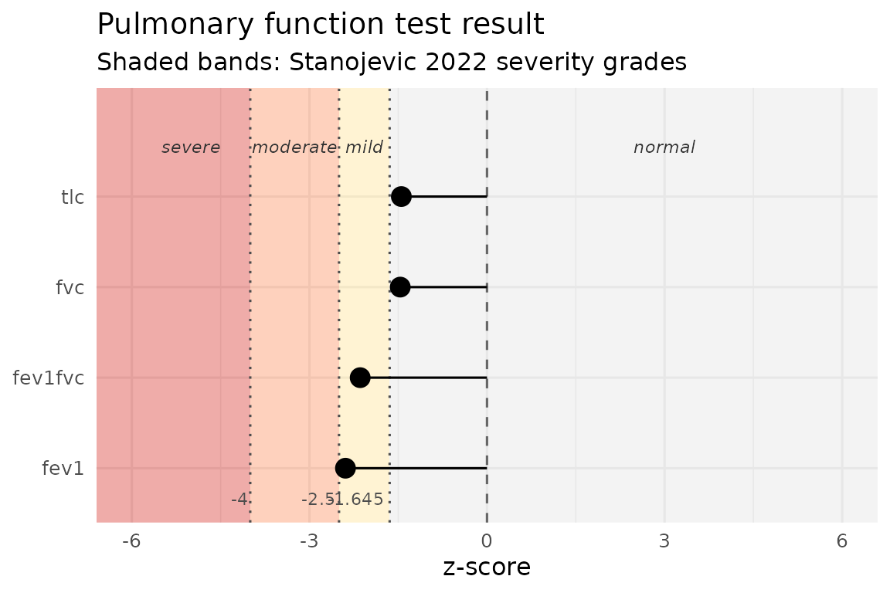

pft implements the Stanojevic et al. ERJ 2022 ERS/ATS
interpretive strategy for pulmonary function tests: reference values,
z-scores, percent predicted, ATS pattern classification, severity
grading, bronchodilator response, PRISm screening, and conditional
change scores, all from a data-frame-pipeline API.
The sections below run the pipeline on a single patient and then on a small cohort.
library(pft)
#> pft 1.0.0 | Research and education use only. Not validated for diagnostic decision-making; all outputs require clinician interpretation. See citation("pft") for the source reference standards.1. Reference values from demographics alone
The simplest call: pass age, sex, height (and race for GLI 2012) and get predicted values, lower limits of normal (LLN), and upper limits of normal (ULN) for every measure.
patient <- data.frame(
sex = "M", age = 45, height = 178
)
ref <- pft_spirometry(patient)
ref[, c("fev1_pred_2022", "fev1_lln_2022", "fev1_uln_2022",
"fvc_pred_2022", "fvc_lln_2022", "fvc_uln_2022")]
#> # A tibble: 1 × 6
#> fev1_pred_2022 fev1_lln_2022 fev1_uln_2022 fvc_pred_2022 fvc_lln_2022
#> <dbl> <dbl> <dbl> <dbl> <dbl>
#> 1 3.87 2.94 4.75 4.81 3.68
#> # ℹ 1 more variable: fvc_uln_2022 <dbl>The default is GLI 2022 (“GLI Global”), the race-neutral equation set
recommended by the ERS/ATS 2022 standard. To use the predecessor GLI
2012 multi-ethnic equations, pass year = 2012 and include a
race column.
The same pattern works for lung volumes and diffusion:
pft_volumes(patient)[, c("frc_pred", "tlc_pred", "rv_pred", "vc_pred")]
#> # A tibble: 1 × 4
#> frc_pred tlc_pred rv_pred vc_pred
#> <dbl> <dbl> <dbl> <dbl>
#> 1 3.39 7.21 1.72 5.50
pft_diffusion(patient)[, c("dlco_pred", "kco_tr_pred", "va_pred")]
#> # A tibble: 1 × 3
#> dlco_pred kco_tr_pred va_pred
#> <dbl> <dbl> <dbl>
#> 1 30.3 4.58 6.672. Z-scores and percent predicted from measured values
Add <measure>_measured columns and z-scores and
percent-predicted appear automatically next to the reference values.
patient_with_measurements <- data.frame(
sex = "M", age = 45, height = 178, race = "Caucasian",
fev1_measured = 2.5,
fvc_measured = 3.8
)
out <- pft_spirometry(patient_with_measurements)
out[, c("fev1_pred_2022", "fev1_zscore_2022", "fev1_pctpred_2022",
"fvc_pred_2022", "fvc_zscore_2022", "fvc_pctpred_2022")]
#> # A tibble: 1 × 6
#> fev1_pred_2022 fev1_zscore_2022 fev1_pctpred_2022 fvc_pred_2022
#> <dbl> <dbl> <dbl> <dbl>
#> 1 3.87 -2.39 64.6 4.81
#> # ℹ 2 more variables: fvc_zscore_2022 <dbl>, fvc_pctpred_2022 <dbl>The z-score uses the standard LMS formula
((measured / M)^L - 1) / (L * S). Percent predicted is
(measured / M) * 100.
3. Severity grading
pft_severity() maps a z-score to one of four categories
per the Stanojevic 2022 cut points:
pft_severity(c(0, -1.7, -3, -5))
#> [1] "normal" "mild" "moderate" "severe"You can grade any z-score column directly:
out$fev1_severity_2022 <- pft_severity(out$fev1_zscore_2022)
out$fvc_severity_2022 <- pft_severity(out$fvc_zscore_2022)
out[, c("fev1_zscore_2022", "fev1_severity_2022", "fvc_zscore_2022", "fvc_severity_2022")]
#> # A tibble: 1 × 4
#> fev1_zscore_2022 fev1_severity_2022 fvc_zscore_2022 fvc_severity_2022
#> <dbl> <chr> <dbl> <chr>
#> 1 -2.39 mild -1.47 normal4. ATS pattern classification
Given measured spirometry plus TLC and their LLNs,
pft_classify() labels the pattern per Stanojevic 2022
Figure 8:
classification_input <- data.frame(
fev1 = 2.5, fev1_lln_2022 = 3.0,
fvc = 3.8, fvc_lln_2022 = 3.5,
fev1fvc = 0.66, fev1fvc_lln_2022 = 0.70,
tlc = 6.0, tlc_lln = 5.0
)
pft_classify(classification_input)[
, c("ats_classification", "ats_pattern_combination")
]
#> # A tibble: 1 × 2
#> ats_classification ats_pattern_combination
#> <chr> <chr>
#> 1 Obstructed ANANThe 4-character ats_pattern_combination records which
inputs drove the label (A = abnormal / below LLN, N = at or above LLN),
in the order FEV1, FVC, FEV1/FVC, TLC. ANAN above means
FEV1 and FEV1/FVC are low; FVC and TLC are normal.
5. Bronchodilator response
The Stanojevic 2022 BDR criterion is a >10% change relative to predicted in FEV1 or FVC (replacing the 2005 12% / 200 mL rule):
pft_bdr(pre = 2.5, post = 3.0, predicted = 4.0)
#> # A tibble: 1 × 2
#> pct_pred_change is_significant
#> <dbl> <lgl>
#> 1 12.5 TRUE6. PRISm screening
Preserved Ratio Impaired Spirometry: low FEV1 with normal FEV1/FVC. Spirometry-only; no TLC needed.
pft_prism(data.frame(
fev1 = 2.0, fev1_lln_2022 = 2.5,
fvc = 2.6, fvc_lln_2022 = 3.0,
fev1fvc = 0.80, fev1fvc_lln_2022 = 0.70
))
#> # A tibble: 1 × 7
#> fev1 fev1_lln_2022 fvc fvc_lln_2022 fev1fvc fev1fvc_lln_2022 prism
#> <dbl> <dbl> <dbl> <dbl> <dbl> <dbl> <lgl>
#> 1 2 2.5 2.6 3 0.8 0.7 TRUE7. Serial change
For longitudinal monitoring, the conditional change score (CCS)
adjusts for regression to the mean using a within-subject z-score
autocorrelation r. |CCS| > 1.96 (the
Stanojevic 2022 two-sided 95% threshold) indicates a change outside the
normal-limits range.
# z dropped from -0.5 to -2.5 over 1 year; r ≈ 0.7 for adult FEV1
pft_change(z1 = -0.5, z2 = -2.5, r = 0.7)
#> # A tibble: 1 × 3
#> ccs r_used is_significant
#> <dbl> <dbl> <lgl>
#> 1 -3.01 0.7 TRUE8. The one-call workflow
pft_interpret() auto-detects every available input and
produces the full Stanojevic 2022-compliant interpretation in one
call:
patient <- data.frame(
sex = "M", age = 45, height = 178, race = "Caucasian",
fev1_measured = 2.5,
fvc_measured = 3.8,
fev1fvc_measured = 2.5 / 3.8,
tlc_measured = 6.0,
fev1_pre = 2.5,
fev1_post = 2.9
)
result <- pft_interpret(patient)
# A high-level subset of the ~60 columns generated:
result[, c("fev1_pred_2022", "fev1_zscore_2022", "fev1_severity_2022",
"fvc_zscore_2022", "fvc_severity_2022",
"ats_classification", "prism",
"fev1_bdr_pct", "fev1_bdr_significant")]
#> <pft_result>
#> Measure Pred Measured Z Severity
#> FEV1 (2022) 3.87 - -2.39 mild
#>
#> Pattern: Obstructed
#> PRISm: FALSE
#> BDR FEV1: TRUE ( 10.3% of predicted)
#>
#> Use `as_tibble(x)` or `as.data.frame(x)` for the full output (9 columns).9. Visualisation
pft_plot() produces a clinical-style z-score lollipop
figure with severity bands. Requires ggplot2
(Suggests).
pft_plot(result)
10. Cohort analyses
Everything composes naturally in a pipeline. Apply
pft_interpret() to a multi-row data frame and the output is
the same data frame with ~60 interpretation columns appended:
cohort <- data.frame(
sex = c("M", "F", "M"),
age = c(45, 60, 30),
height = c(178, 165, 175),
race = c("Caucasian", "AfrAm", "Caucasian"),
fev1_measured = c(2.5, 1.8, 4.0),
fvc_measured = c(3.8, 2.4, 5.2),
fev1fvc_measured = c(2.5/3.8, 1.8/2.4, 4.0/5.2),
tlc_measured = c(6.0, 4.5, 6.8)
)
interpreted <- pft_interpret(cohort)
interpreted[, c("sex", "age",
"fev1_zscore_2022", "fev1_severity_2022",
"ats_classification", "prism")]
#> # A tibble: 3 × 6
#> sex age fev1_zscore_2022 fev1_severity_2022 ats_classification prism
#> <chr> <dbl> <dbl> <chr> <chr> <lgl>
#> 1 M 45 -2.39 mild Obstructed FALSE
#> 2 F 60 -1.58 normal Normal FALSE
#> 3 M 30 -0.122 normal Normal FALSE11. Long-form tidier for downstream analysis
pft_long() pivots a wide pft_result into
one row per (patient, measure), the natural shape for
dplyr / ggplot2 workflows.
pft_long(interpreted)[1:6, ]
#> # A tibble: 6 × 10
#> .patient measure year pred lln uln measured zscore pctpred severity
#> <int> <chr> <chr> <dbl> <dbl> <dbl> <dbl> <dbl> <dbl> <chr>
#> 1 1 fev1 2022 3.87 2.94 4.75 2.5 -2.39 64.6 mild
#> 2 2 fev1 2022 2.47 1.77 3.12 1.8 -1.58 73.0 normal
#> 3 3 fev1 2022 4.07 3.16 4.93 4 -0.122 98.4 normal
#> 4 1 fvc 2022 4.81 3.68 5.95 3.8 -1.47 79.1 normal
#> 5 2 fvc 2022 3.10 2.25 3.97 2.4 -1.36 77.4 normal
#> 6 3 fvc 2022 4.87 3.79 5.96 5.2 0.497 107. normalThe S3 method tidy.pft_result() dispatches to it when
broom is installed, so
broom::tidy(interpreted) is identical to
pft_long(interpreted).
12. Diffusion clinical category
When pft_diffusion() outputs are available (the default
in pft_interpret() when demographics are supplied), the
Hughes & Pride 2012 categorical interpretation falls out of
dlco_zscore, va_zscore,
kco_*_zscore:
patient_dlco <- data.frame(
sex = "M", age = 50, height = 178, race = "Caucasian",
dlco_measured = 6, # low
va_measured = 6,
kco_tr_measured = 1.0 # also low -> Parenchymal pattern
)
pft_interpret(patient_dlco)$diffusion_category
#> [1] "Parenchymal"Citations
See citation("pft") for the package and underlying
reference standards as bibentry objects, suitable for
direct inclusion in publications.
citation("pft")
#> Please cite the underlying reference standard for whichever function(s)
#> you use, in addition to (or instead of) the pft package itself.
#>
#> Johnson P, Helgeson S (2026). _pft: Pulmonary Function Test
#> Interpretation per ERS/ATS 2022_. R package version 1.0.0,
#> <https://github.com/overdodactyl/pft>.
#>
#> GLI 2012 spirometry equations (year = 2012):
#>
#> Quanjer P, Stanojevic S, Cole T, et al. (2012). "Multi-ethnic
#> reference values for spirometry for the 3-95-yr age range: the global
#> lung function 2012 equations." _European Respiratory Journal_,
#> *40*(6), 1324-1343. doi:10.1183/09031936.00080312
#> <https://doi.org/10.1183/09031936.00080312>.
#>
#> GLI Global 2022 spirometry equations (year = 2022):
#>
#> Bowerman C, Bhakta N, Brazzale D, et al. (2023). "A race-neutral
#> approach to the interpretation of lung function measurements."
#> _American Journal of Respiratory and Critical Care Medicine_,
#> *207*(6), 768-774. doi:10.1164/rccm.202205-0963OC
#> <https://doi.org/10.1164/rccm.202205-0963OC>.
#>
#> GLI 2021 static lung volumes (volume_normals):
#>
#> Hall G, Filipow N, Ruppel G, et al. (2021). "Official ERS technical
#> standard: Global Lung Function Initiative reference values for static
#> lung volumes in individuals of European ancestry." _European
#> Respiratory Journal_, *57*(3), 2000289.
#> doi:10.1183/13993003.00289-2020
#> <https://doi.org/10.1183/13993003.00289-2020>.
#>
#> GLI 2017 TLCO / DLCO (diffusion_normals). Author correction (2020),
#> doi:10.1183/13993003.50010-2017, is the version implemented here:
#>
#> Stanojevic S, Graham B, Cooper B, et al. (2017). "Official ERS
#> technical standards: Global Lung Function Initiative reference values
#> for the carbon monoxide transfer factor for Caucasians." _European
#> Respiratory Journal_, *50*(3), 1700010.
#> doi:10.1183/13993003.00010-2017
#> <https://doi.org/10.1183/13993003.00010-2017>.
#>
#> Pattern interpretation algorithm (ats_classification):
#>
#> Stanojevic S, Kaminsky D, Miller M, et al. (2022). "ERS/ATS technical
#> standard on interpretive strategies for routine lung function tests."
#> _European Respiratory Journal_, *60*(1), 2101499.
#> doi:10.1183/13993003.01499-2021
#> <https://doi.org/10.1183/13993003.01499-2021>.
#>
#> To see these entries in BibTeX format, use 'print(<citation>,
#> bibtex=TRUE)', 'toBibtex(.)', or set
#> 'options(citation.bibtex.max=999)'.